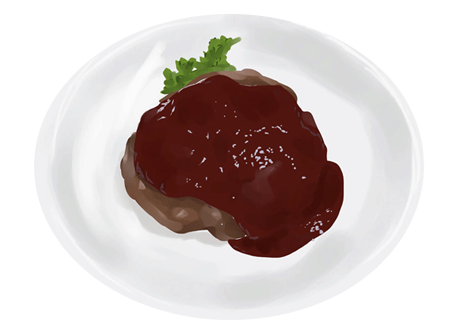
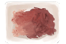
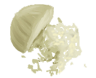
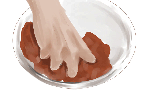
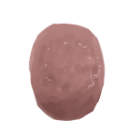
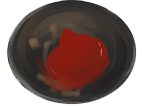
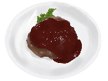

ハンバーグ

（材料）

- 合いびき肉 500ｇ
- 牛乳 大さじ2
- 玉ねぎ 1/2個
- パン粉 1/2カップ
- 塩、胡椒、ナツメグ 適量
- 卵 1個
（作り方）

①玉ねぎをみじん切りにする。
②ボウルにすべての材料を入れ こねる
③成形する
④フライパンで焼きめをつけてからグリルで10分～15分焼く。

⑤肉汁、ケチャップ、ソースを合わせてソースを作る。
⑥ハンバーグをお皿に盛りつけソースをかけて完成